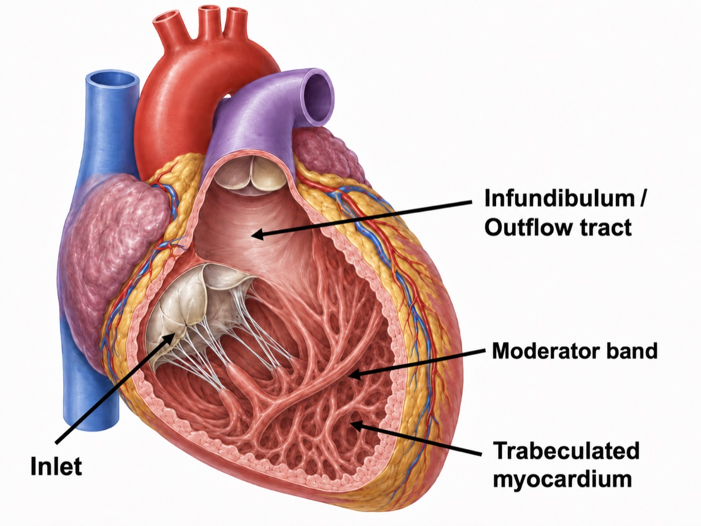
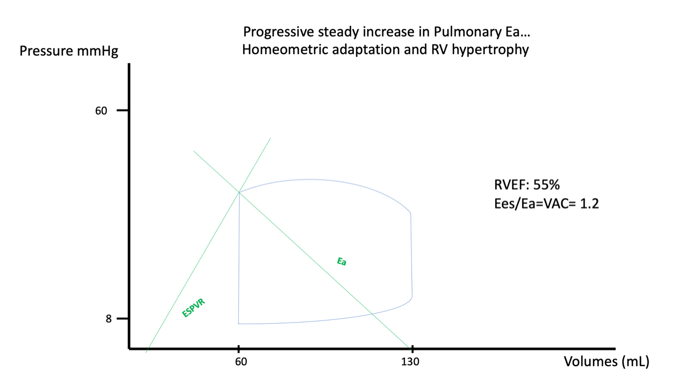
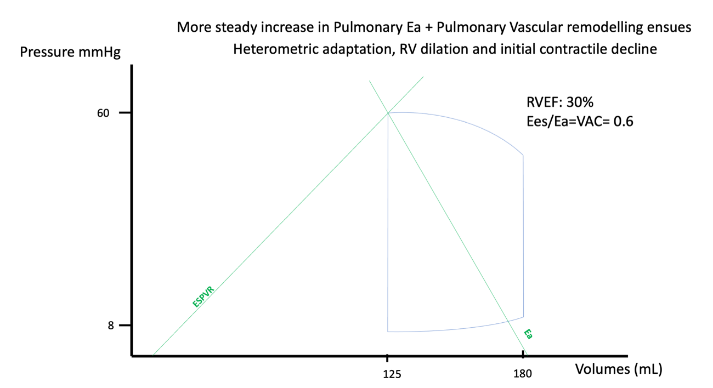
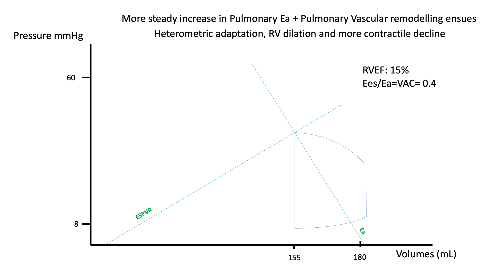
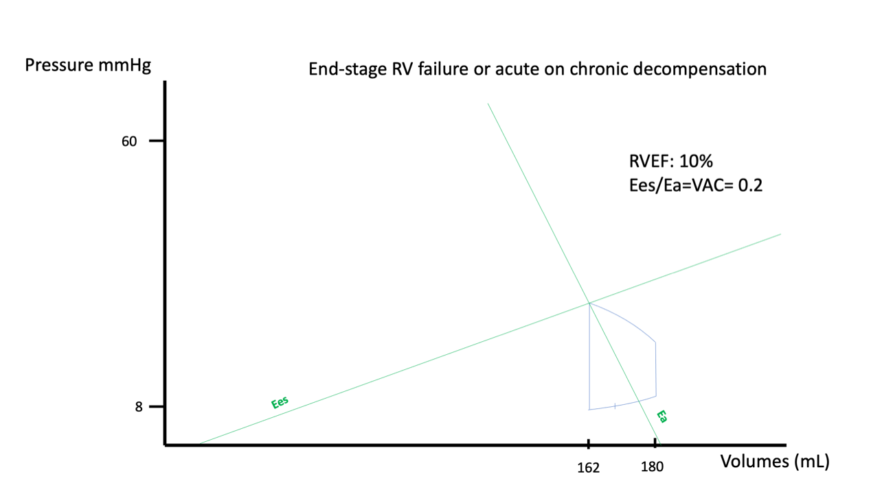

Module I9
Interface IV: the right ventricle to the left atrium
Module I7 and Module I8 carried blood from the capillary bed back to the right atrium and stopped there. That was deliberate. Every term in the venous return equation is a property of the vasculature, and the equation ends at a right atrial pressure it treats as a boundary condition. Something has to make that boundary condition low. The right ventricle is what does it, and keeping right atrial pressure low is only half of its job. The other half is moving the entire cardiac output across a second vascular bed, at a pressure the left ventricle can accept, before any of it can be ejected into the systemic circulation.
Interface IV is that segment, from the pulmonary valve to the left atrium. Written out it looks like the other three, and Module I1 made the point that one hydraulic relationship describes all of them. What makes this interface different is not the algebra. It is that the pump at its upstream end is built to a specification the left ventricle is not, and the vascular bed downstream behaves in ways the systemic bed does not. A clinician who imports left-sided intuitions here makes characteristic, repeatable errors: filling a ventricle that is already overfilled, reading a normal-looking ejection index as reassurance, and chasing contractility when the problem is load. So this module takes the pump first, then the load, then the coupling between them, which is the concept that makes the rest legible, then the failure mode, which is a spiral rather than a decline, and finally what the bedside measures actually measure and where each one fails.
The interface, and the two jobs of the right ventricle
The relationship has the same form as the first three.
The scale of the numbers is where the asymmetry with the systemic circulation begins. Simonneau and colleagues, revisiting the definition of pulmonary hypertension for the sixth World Symposium, pooled the available normal data and found a mean pulmonary artery pressure in healthy subjects of 14.0 (S.D. +/- 3.3 mmHg). Two standard deviations above that is 20 mmHg, which is why the diagnostic threshold moved from the older, frankly arbitrary 25 mmHg down to a mean pressure above 20, and the 2022 European Society of Cardiology and European Respiratory Society guidelines then added a resistance criterion of above 2 Wood units. Hold those next to the systemic circulation, where a mean arterial pressure of 90 mmHg drives the same cardiac output through a resistance of roughly 15 Wood units. The right ventricle moves the same flow for about a sixth of the pressure.
Physiologically the right ventricle has two separate obligations, and separating them is more useful than it first appears. The first is to permit venous return by holding right atrial pressure as low as physiologically possible. That is not a passive consequence of the ventricle emptying, it is an active service the right heart performs for the systemic circulation. Recall the venous return relationship from I8: flow is the difference between mean systemic filling pressure and right atrial pressure, divided by the resistance to venous return. Every millimetre of mercury the right ventricle fails to remove from the right atrium is subtracted from the gradient driving the whole systemic circulation back to the chest. The second is to deliver that flow across the lungs at a pressure the left atrium can accept, so the left ventricle has something to eject.
The two can fail together or separately. Failure at the first produces venous congestion, which damages organs through the pressure on their venous outflow rather than through any shortfall in delivery. Failure at the second produces a low cardiac output with an underfilled left heart. The decompensated right ventricle usually does both at once, which is why such a patient presents with a low cardiac index, a high right atrial pressure, and a left ventricle that looks small and vigorous on echocardiography. That shared consequence makes a rising right atrial pressure the cardinal physiologic sign of a failing Interface IV. What the number is not, and I8 and Module I11 both make this case at length, is a measure of how full the patient is. The defensible reading is narrower: a right atrial pressure rising while cardiac output falls is evidence about the right ventricle's first job, and it should prompt a question about the right heart rather than a fluid order.
| Mean PAP | LAP | CO | RAP |
|---|---|---|---|
| About 14 mmHg in health, abnormal above 20 | About 8 to 12 mmHg, read as the occlusion pressure | The same flow that appears in the other three interfaces | Low single digits in health |
| Rises with vascular disease, with flow, or with LAP, and on its own separates none of them | Sets the downstream boundary here and the upstream boundary of Interface I | Falls when the ventricle uncouples from its load, which makes a pulmonary problem a systemic one with no intervening step | Rises when the right ventricle cannot accept its inflow at low pressure, and is the cardinal sign this interface is failing |
A pump built to a different specification
The right ventricle is not a smaller left ventricle. The two chambers are distinct embryologically, anatomically and functionally, each matched to the circulation it serves. The left ventricle is a pressure generator, built to sustain a high and stable arterial pressure so peripheral beds can regulate their own flow, an argument taken up in Module I4. The right ventricle is a flow generator, built to move a large volume cheaply through a bed offering very little opposition, and every difference between them follows from that.
![Side by side cutaway drawings of the right and left ventricles. The right ventricle is labelled thin wall, lower mass, low-pressure flow generator, predominantly longitudinal shortening, better tolerance to volume, marked afterload sensitivity, ejecting into a pulmonary circulation labelled low resistance, high compliance, low impedance. The left ventricle is labelled thick wall, higher mass, pressure generator, circumferential and torsional mechanics, better tolerance to pressure, greater pressure reserve, ejecting into a systemic circulation labelled high resistance, lower compliance, high pressure load. Between them the caption reads same stroke volume, different task.](img/i9-rv-vs-lv.jpg)
The anatomy follows the task. The right ventricle is thin walled and geometrically awkward: crescentic in cross-section, triangular in long axis, and divided into three functional components rather than forming a single chamber. The inlet carries the tricuspid valve, the apical portion is heavily trabeculated and carries the moderator band, and the infundibulum is a smooth-walled conus separating the tricuspid and pulmonic valves. The left ventricle has no equivalent of that third component, and the segmented architecture underlies the sequential contraction described below.

The numbers make the asymmetry concrete. The right ventricular free wall is about 2 to 5 mm thick against 7 to 11 mm on the left. Typical pressures are about 25 over 4 mmHg against 130 over 8. Right ventricular end-systolic elastance is several times lower, and stroke work is roughly a sixth, for the same stroke volume. These comparative figures are set out by Sanz and colleagues and by Haddad and colleagues in their reviews of right ventricular anatomy and function. None of that is deficiency. Each figure is matched to a vascular bed it drives at about a sixth of the systemic pressure and against a resistance an order of magnitude lower still, and the whole set becomes a liability only when that bed stops behaving as designed. The consequential asymmetry is the last one: the right ventricle tolerates volume better than pressure, and the left ventricle the reverse.
How the right ventricle actually contracts
Left ventricular systole is a concentric squeeze with a substantial torsional component. Right ventricular systole is nothing of the sort. It is a sequential event, beginning in the inlet and trabeculated regions and reaching the infundibulum slightly later, so ejection propagates as a wave rather than occurring everywhere at once. Three mechanisms contribute: longitudinal shortening that draws the tricuspid annulus toward the apex, inward movement of the free wall, and traction transmitted through the septum and the left ventricular attachments. These components are not independent: longitudinal shortening itself depends substantially on the oblique septal fibers and their mechanical continuity with the left ventricle.
Longitudinal shortening dominates, and there is a measurement of by how much. Brown and colleagues quantified the longitudinal and transverse components of right ventricular fractional area change in 90 subjects with normal echocardiograms and 36 patients with pulmonary arterial hypertension. In the normal cohort, longitudinal fractional area change accounted for 77 (S.D. +/- 14 percent) of the total, and in pulmonary arterial hypertension it was still the majority at 63 (S.D. +/- 18 percent). Following vasodilator therapy the improvement in overall function came entirely from the longitudinal component, which rose from 58 (S.D. +/- 18) to 69 (S.D. +/- 17 percent) while the transverse component fell.
Three consequences follow, and all three matter when the bedside indices are taken one at a time. Measuring longitudinal motion is a defensible way to assess this ventricle, so tricuspid annular plane systolic excursion (TAPSE) and tissue Doppler S′ are not crude surrogates chosen for convenience. But because much of that longitudinal shortening depends on shared septal and left ventricular mechanics, longitudinal motion is not a property of the right ventricular free wall alone, and left ventricular systolic dysfunction can degrade it too. And Brown's finding that it improved with vasodilator therapy identifies it as the afterload-responsive element of right ventricular function, so the number moves when the load moves even if the myocardium has not changed.
The pressure-volume loop with almost no isovolumic phase
A left ventricular pressure-volume loop is close to rectangular: a vertical isovolumic contraction from mitral closure to aortic opening, an ejection phase, a vertical isovolumic relaxation, then filling. In a normal right ventricular loop the rectangle is gone.
![Right ventricular pressure-volume loop plotted with pressure on the vertical axis from below 10 to 30 mmHg and volume on the horizontal axis from 50 to 130 mL. The loop is rounded and triangular rather than rectangular, with almost no vertical isovolumic contraction segment. Two green lines are drawn, a steep line labelled Ees passing through the end-systolic corner of the loop and a shallow downward sloping line labelled Ea running from the end-systolic corner to the end-diastolic volume on the volume axis.](img/i9-pvloop-normal.png)
The reason is arithmetic. Pulmonary artery diastolic pressure is low, often only a few mmHg above right ventricular end-diastolic pressure, so the pulmonic valve opens almost as soon as the ventricle begins to develop pressure and there is barely any interval during which the chamber contracts against closed valves. Ejection then continues past peak pressure and into the pressure decline, an interval known as hangout, which exists because the downstream bed is so compliant that flow carries on by momentum after the driving gradient has reversed. The right ventricle ejects for a longer fraction of systole than the left and pays almost nothing for the privilege.
That is efficiency, and it is also the vulnerability. A chamber that has never had to generate an isovolumic pressure rise has no established capacity to do so. When pulmonary vascular load increases, so does the artery's diastolic pressure, the loop thus acquires an isovolumic contraction phase it did not previously have, and that phase is stroke work spent before a single millilitre has left the ventricle. Watch for it in the figures that follow: as load rises, a vertical segment appears on the left side of the loop and grows. That line is the visual signature of a right ventricle doing work it was not built for. Viewed through the time-varying elastance framework, pulmonary artery diastolic pressure is especially important because it approximates the pressure the right ventricle must reach before the pulmonic valve opens. As that opening pressure rises, ejection begins later in systole and less time remains before maximal end-systolic elastance is reached, so stroke volume can fall even when intrinsic contractility has not changed.
What actually loads the right ventricle
In its purest sense, right ventricular afterload is the wall stress the chamber develops during ejection. That is what the myocyte experiences and what determines oxygen demand, and the Laplace relationship states what sets it.
Two terms in that expression explain most of what goes wrong at this interface. Wall thickness sits in the denominator, and the right ventricular free wall is two to five millimetres thick, so a given pressure generates far more wall stress here than in the left ventricle. Radius sits in the numerator, so the dilatation that follows a rise in load raises wall stress further, which is the first hint that right ventricular failure has a self-reinforcing structure. Wall stress cannot be measured at the bedside, so it is approximated by the pressure the ventricle has to generate, and that pressure by the resistance of the bed it ejects into.
Both approximations lose information. Pulmonary vascular resistance describes only the steady, non-pulsatile opposition to flow, and the right ventricle also faces a pulsatile load determined by arterial compliance, characteristic impedance and wave reflection. The complete description is pulmonary vascular input impedance, which requires simultaneous pressure and flow measurement across the frequency spectrum of ejection and is not a bedside quantity. The decomposition of load into its steady and pulsatile components, and the full case for why resistance alone can mislead, belong to the Expert treatment of right ventricular to pulmonary arterial coupling. What belongs here is what raises resistance, including the several determinants that are not properties of the blood vessels at all.
The determinants of pulmonary vascular resistance, including the ones that are not vascular
Start with the vascular determinants, because they behave in one way the systemic circulation does not. The pulmonary bed at rest is not fully open: a substantial fraction of it is unperfused or partly collapsed, and raising pulmonary artery pressure both recruits those vessels and distends the ones already open. So pulmonary vascular resistance falls as flow rises, the opposite of what a Poiseuille relationship suggests, which is why a healthy pulmonary circulation accepts the four-fold rise in output of heavy exercise with only a modest rise in pressure, and why a calculated resistance is interpretable only alongside the flow at which it was calculated. Then there are the determinants that have nothing to do with the vessel walls at all.
Lung volume. The pulmonary vessels sit in two mechanically different environments. Alveolar vessels, the capillaries running in the alveolar septa, are compressed as the alveoli expand, so their resistance rises with lung volume. Extra-alveolar vessels, the larger arteries and veins running through the parenchyma, are held open by the radial traction of the surrounding tissue, so their resistance falls as the lung inflates. Summing two opposite behaviours gives a U-shaped relationship with a minimum near functional residual capacity.
![Three panels. Upper left panel plots pulmonary vascular resistance against lung volume for intra-alveolar vessels as a red dashed curve that is flat at low volume and rises steeply at high volume. Upper right panel plots the same axes for extra-alveolar vessels as a blue dashed curve that starts high at low volume and falls toward a plateau. Lower panel superimposes both dashed curves and adds a solid black curve labelled combined effect, which is U-shaped with its minimum in the mid range of lung volume.](img/i9-pvr-lung-volume.png)
The clinical reading of that curve is that, whenever a patient is submitted to invasive mechanical ventilation, the ventilator is a determinant of right ventricular afterload in both directions. Recruiting a collapsed lung reduces resistance, by reopening extra-alveolar vessels and by relieving the hypoxic vasoconstriction described next. Overdistending an aerated lung raises it. A recruitment manoeuvre and an injurious tidal volume are the same intervention viewed from opposite ends of one curve, and which a patient is receiving depends on where their lung is currently operating.
Hypoxia. Alveolar hypoxia constricts the arterioles supplying that alveolus, which is the opposite of the systemic response and the only reflex of its kind in the body. Regionally it is useful, diverting flow away from poorly ventilated units. Globally, as in diffuse lung injury, it is simply a rise in pulmonary vascular resistance imposed on the right ventricle. Hypercapnia and acidosis add to it with only minutes of latency, which makes a period of permissive hypercapnia a hemodynamic event for the right heart and not only a respiratory one.
Left atrial pressure. This one is easy to lose because of how the resistance is calculated. Pulmonary vascular resistance is the transpulmonary gradient divided by flow, and that gradient already has the occlusion pressure subtracted from it. A rise in left atrial pressure therefore raises mean pulmonary artery pressure without necessarily raising the calculated resistance at all, because both terms of the subtraction move together. The pressure the right ventricle sees has gone up, and the number reported as its afterload has not moved. Left-sided disease is a right-sided load, transmitted through an interface the arithmetic conceals.
Alveolar pressure relative to vascular pressure. Where alveolar pressure exceeds capillary pressure, those capillaries are compressed and flow is limited or abolished. The West zone framework describes this, and it appears here as one determinant of resistance among several: any region not in zone 3 conditions is one whose vessels are partly closed and whose contribution to resistance is higher. West zones as they govern the validity of a wedge pressure are taken up in Module I15, and as pulmonary circulation physiology under positive pressure they belong to the Expert integrating module.
The pulmonary pressure derived parameters, defined properly
Four numbers come off a right heart catheterisation report. They are not interchangeable, and each answers a different question.
DPG = PADP − PAOP
PVR = TPG ÷ CO
PAC = SV ÷ (PASP − PADP)TPG, transpulmonary gradient (mmHg); DPG, diastolic pulmonary gradient (mmHg); PADP, pulmonary artery diastolic pressure; PASP, pulmonary artery systolic pressure; PAOP, pulmonary artery occlusion pressure, standing for left atrial pressure; PVR, pulmonary vascular resistance, in Wood units when the gradient is in mmHg and cardiac output in L/min, and multiplied by 80 for dynes·s·cm−5; PAC, pulmonary artery capacitance or compliance (mL/mmHg); SV, stroke volume (mL).
The transpulmonary gradient is the pressure drop across the lungs and the correct numerator for a resistance calculation, but on its own it is sensitive to both cardiac output and left atrial pressure, which is why a raised value does not by itself establish that the pulmonary vessels are diseased. Naeije and colleagues set out that limitation and argued for reading it alongside a flow-corrected measure rather than in isolation. The diastolic pulmonary gradient was proposed to get around the same sensitivity. Taken at end-diastole, when flow through the pulmonary circulation has essentially ceased, it is less contaminated by cardiac output and less influenced by a passively transmitted left atrial pressure. Gerges and colleagues analysed 1,094 cases of pulmonary hypertension due to left heart disease from a database of 2,351 catheterisations. Among patients with postcapillary pulmonary hypertension and a transpulmonary gradient above 12 mmHg, a diastolic gradient of 7 mmHg or more carried a median survival of 78 months against 101 months for those below 7, and more advanced pulmonary vascular remodelling on the available histology. The diastolic gradient, in other words, separates a circulation that has remodelled from one merely transmitting a high left atrial pressure backwards.
Pulmonary arterial capacitance, as used here, is essentially pulmonary arterial compliance rather than the venous-reservoir capacitance described in Module I7 (opens in a new tab). Mahapatra et al. defined it clinically as stroke volume divided by pulmonary pulse pressure (SV/PP), analogous to total arterial compliance in the systemic circulation. It therefore reflects how much pulsatile volume the pulmonary arterial bed accommodates per unit pressure change, and thus how much of the pulsatile work of ejection the vessels absorb rather than reflect back at the ventricle. It carries information resistance does not. Mahapatra and colleagues followed 104 patients with idiopathic pulmonary arterial hypertension for four years and found stroke volume divided by pulse pressure to be the strongest univariate predictor of mortality among the hemodynamic variables, and the only one to survive successive bivariate analysis. The lowest capacitance quartile had a four-year mortality of 61 percent, while the highest had no deaths.
Resistance and capacitance are not independent, which matters when reading them together. Lankhaar and colleagues analysed paired catheterisations in 62 patients and found the product of resistance and compliance unchanged by treatment, implying a fixed inverse relationship. Tedford and colleagues confirmed the same hyperbolic dependence in 1,009 patients with a normal occlusion pressure, finding a nearly constant resistance-compliance product of 0.48 (S.D. +/- 0.17 seconds) while the corresponding systemic product was highly variable, and elevating the occlusion pressure lowered compliance for any given resistance. A rise in left atrial pressure therefore not only fails to raise the calculated resistance, it shifts the load toward its pulsatile component. The consequences of that shift are the Expert treatment's subject.
A worked panel
Take an admission set from a patient with known idiopathic pulmonary arterial hypertension, admitted for initiation of intravenous prostacyclin and diuresis, now hypotensive at 85 over 54 with a heart rate of 103 after a dose increase. Right atrial pressure 15 mmHg. Right ventricle 65 over 14. Pulmonary artery 61 over 27 with a mean of 40. Occlusion pressure 10 mmHg. Cardiac output by thermodilution 3.6 L/min with an index of 2.1. Stroke volume 35 mL. Mixed venous saturation 56 percent. Work the derived values rather than reading them off the report. The transpulmonary gradient is 40 − 10 = 30 mmHg, the diastolic pulmonary gradient 27 − 10 = 17 mmHg, and the resistance 30 ÷ 3.6 = 8.3 Wood units. Pulmonary pulse pressure is 61 − 27 = 34 mmHg, so capacitance is 35 ÷ 34 = 1.03 mL/mmHg.
Read together those numbers say something the individual values do not. The occlusion pressure of 10 is normal, so this is precapillary disease and the left heart is not the problem. A transpulmonary gradient of 30 and a diastolic gradient of 17 are both far beyond anything a passively transmitted left atrial pressure could produce. The resistance is severe, and the capacitance of 1.03 mL/mmHg says the bed has lost most of its ability to buffer pulsatile flow, the finding that carried the mortality signal in Mahapatra's cohort. A right atrial pressure of 15 with a cardiac index of 2.0 says the ventricle is managing neither of its two jobs. What the panel does not support is the intuition that a hypotensive patient 7 litres net negative needs fluid. The next two sections are why.
Coupling, and the two ways the ventricle adapts
The concept that organises everything above is that right ventricular performance is a property of neither the ventricle nor the vasculature, but of the relationship between them. Two quantities express it, both read off the pressure-volume loop. End-systolic elastance, Ees, is the slope of the line connecting the end-systolic pressure-volume points obtained across a range of loading conditions, and it is the load-independent index of contractility, which is exactly what makes it valuable, because common ejection-phase indices such as ejection fraction are load dependent and may change even when intrinsic myocardial contractility has not. Effective arterial elastance, Ea, is end-systolic pressure divided by stroke volume, and it condenses the entire arterial load, resistive and pulsatile, into one number with the same units as Ees. Because the units match, their ratio is dimensionless. Vonk Noordegraaf and colleagues review how this coupling framework organises right ventricular load and function in pulmonary hypertension.
Ees divided by Ea is the coupling ratio, and optimal right ventricular to pulmonary arterial coupling sits at roughly 1.5 to 2, meaning the ventricle carries substantial contractile reserve above the load it faces. Note that this is written the opposite way round from left-sided ventricular-arterial coupling, conventionally Ea over Ees, so the direction of a worsening number is inverted between the two sides. Tello and colleagues, comparing echocardiographic surrogates against invasive single-beat pressure-volume loops in 52 patients with pulmonary arterial hypertension or chronic thromboembolic disease, took Ees over Ea below 0.805 as the invasive definition of uncoupling. In almost every clinical situation, uncoupling happens because Ea rises rather than because contractility suddenly falls, and the ventricle has two strategies for restoring the ratio, used in that order.

Homeometric adaptation comes first: the ventricle raises its contractility to match the load, through increased sympathetic drive and mechanosensitive signalling, without any significant change in chamber size. On the PV loop, the rising afterload also makes the right ventricular cycle look progressively less like its normal rounded contour: distinct isovolumic contraction and relaxation phases emerge, whereas in normal physiology both are minimal because pulmonary artery diastolic pressure is low and ejection begins and ends with little truly isovolumic time. Stroke volume is maintained, the coupling ratio falls but stays workable, and the patient may be entirely compensated. Over weeks to months, sustained pressure loading adds a structural version of the same strategy in hypertrophy, which thickens the wall, partially normalises wall stress by raising the denominator of the Laplace relationship, and raises baseline Ees. Hypertrophy is homeometric adaptation given time to build the substrate it needs. That compensation is not free. Hypertrophy can also increase passive right ventricular diastolic elastance, so the same wall thickening that reduces systolic wall stress and supports Ees may reduce diastolic reserve, causing filling pressure to rise more steeply as volume increases.


Heterometric adaptation follows when the first strategy is exhausted. The ventricle dilates, sarcomere stretch recruits the Frank-Starling mechanism described in Module N4 and Module N5, and stroke volume is defended for a time. But dilatation does not raise contractility, because Ees is load independent and a rightward shift of the loop does not change its slope. What dilatation buys in stroke volume it pays for in wall stress, since radius is in the numerator of the Laplace relationship, and in efficiency, since more energy is spent for the same stroke work. Dilatation, however, has a ceiling. As afterload rises, end-systolic volume moves rightward along the Ees relationship, so maintaining stroke volume requires a progressively larger end-diastolic volume. That strategy works only while the passive diastolic pressure-volume relationship still permits additional filling. Once the ventricle reaches the steep portion of that curve, or RV end-diastolic pressure approaches mean systemic filling pressure and thereby narrows the gradient for venous return, additional volume raises right atrial pressure far more readily than stroke volume. Magder and colleagues describe this state as RV limitation: stroke volume has reached a filling-imposed ceiling created by the interaction between active systolic and passive diastolic elastance. With more advanced dilatation, functional tricuspid regurgitation can add another penalty: regurgitant volume further enlarges the right ventricle while systolic backflow into the systemic veins reduces effective forward output and can oppose venous return.

The distinction between acute and chronic loading falls out of this framework rather than having to be memorised. Homeometric adaptation takes time and hypertrophy takes considerably more, so a ventricle that has never been loaded cannot raise its Ees appreciably within minutes, and an acute rise in Ea is met almost entirely by dilatation, with all of dilatation's costs and none of hypertrophy's compensation. That is why a patient with long-standing pulmonary arterial hypertension walks about with a pulmonary artery systolic pressure that would kill a previously healthy person acutely, and why acute pulmonary embolism kills through cardiovascular collapse rather than hypoxaemia. The embolus raises Ea in seconds against a ventricle with no capacity to answer.
The spiral, and why coronary perfusion is the step that makes it one
Everything so far describes a ventricle that deteriorates as load rises. What makes right ventricular failure clinically distinctive is that beyond a point it stops being a graded deterioration and becomes self-accelerating, and the step that closes the loop is coronary perfusion. In health the right ventricle enjoys a perfusion advantage: its wall is thin and its systolic pressure low, so intramyocardial compression during systole is modest and right coronary flow continues through systole and diastole alike. Left coronary flow, by contrast, is largely squeezed into diastole, because the pressure developed inside the thick left ventricular wall during systole compresses the vessels running through it and opposes flow along them.
![Two stacked tracings against time in seconds. The upper tracing is aortic pressure, rising from 80 to 120 mmHg. The lower tracing shows phasic coronary blood flow in mL per minute for two vessels. Left coronary artery flow falls almost to zero at the onset of systole then rises to a peak of about 100 mL per minute in early diastole. Right coronary artery flow remains between about 5 and 15 mL per minute throughout, dipping only slightly during systole and showing a much smaller diastolic predominance.](img/i9-coronary-phasic-flow.jpg)
Raise right ventricular systolic pressure and that advantage evaporates. Systolic intramural pressure now competes with aortic pressure, so right coronary flow becomes diastole-dependent in the way left coronary flow always was, and at the same time wall stress has risen, so oxygen demand is higher. Supply falls exactly as demand rises.
Vlahakes, Turley and Hoffman established the mechanism experimentally in 1981, and the design is what makes it convincing. In anaesthetised dogs instrumented for pressure and right coronary flow, they progressively constricted the pulmonary artery until right ventricular failure occurred, defined by falling aortic pressure and cardiac output with a rising right ventricular end-diastolic pressure. As right ventricular systolic pressure climbed, myocardial blood flow failed to keep pace with demand. At the onset of failure there was no reactive hyperaemia of right coronary flow, meaning the coronary reserve was already fully spent, and biopsies showed the right ventricular free wall ischaemic while the left ventricular free wall was not. Then the decisive step: infusing phenylephrine raised aortic pressure and therefore coronary perfusion pressure, and the failure reversed. End-diastolic pressure fell, cardiac output and right ventricular systolic pressure rose, reactive hyperaemia was restored, and the biochemical markers of ischaemia normalised. The failure had been ischaemic, and raising systemic pressure treated it.
![Circular spiral diagram beginning at the top with increased right ventricular afterload. Running clockwise down the right side: right ventricular dilatation, tricuspid valve insufficiency, increased right ventricular wall tension, neurohormonal activation, myocardial inflammation, increased right ventricular oxygen demand, intrapulmonary arteriovenous shunting, right ventricular ischaemia and hypoxic injury. Continuing along the bottom and up the left side: reduced right ventricular contractility, reduced right ventricular output, reduced left ventricular preload, reduced cardiac output, reduced systemic blood pressure, reduced coronary perfusion of the right ventricle, reduced right ventricular oxygen delivery. The spiral converges inward to obstructive shock and then to death.](img/i9-rv-failure-spiral.png)
Follow the arrows and the therapeutic logic writes itself. Systemic arterial pressure is on the supply arm of the diagram. A right ventricle under high load depends on systemic pressure for its own perfusion in a way a normal one does not, so systemic hypotension here is not simply a perfusion problem for the kidneys and the brain, it is directly a cause of further right ventricular deterioration. That is the physiologic content of the instruction to restore perfusion pressure before reaching for an inotrope.
The other intervention that suggests itself, giving volume, is the one the physiology argues against, and there is a clean experiment on the point. Ghignone, Girling and Prewitt raised pulmonary vascular resistance in eight anaesthetised ventilated dogs by microembolising the pulmonary bed with glass beads, then compared volume expansion against norepinephrine. Before the resistance was raised, 100 mL of dextran did what fluid is supposed to do, increasing stroke volume and mean arterial pressure. After it was raised, the same manoeuvre produced right ventricular failure: stroke volume fell from 9.1 to 6.3 mL and mean arterial pressure from 97 to 65 mmHg, despite a rise in right ventricular end-diastolic pressure and with pulmonary vascular resistance held constant. Norepinephrine did the opposite, lowering biventricular filling pressures and raising stroke volume from 6.2 to 11.3 mL.
Interdependence: the septum and the pericardium
The right ventricle cannot be analysed as an isolated free wall. The two ventricles share myocardial fibres, share the interventricular septum, and are enclosed together in one pericardial sac, and each fact creates a channel through which one alters the other.
Systolic interaction is the contribution left ventricular contraction and septal shortening make to right ventricular ejection. Damiano and colleagues quantified it using an electrically isolated right ventricular free wall preparation, which allowed the two components of the ejection waveform to be separated. For right ventricular pressure, the left ventricular and septal component was significantly greater than the free wall component, at 63.5 (S.D. +/- 10.9 percent) against 36.5 (S.D. +/- 10.9 percent) of the peak-to-peak value. When free wall pacing was stopped in diastole, the subsequent beat still achieved 68 (S.D. +/- 4 percent) of right ventricular systolic pressure and 80 (S.D. +/- 4 percent) of pulmonary flow. The free wall, in other words, contributes a minority of the pressure the right ventricle develops. Santamore and Dell'Italia reviewed the wider evidence and reached the same conclusion, and the practical consequence is that left ventricular systolic dysfunction causes right ventricular systolic dysfunction with no pulmonary vascular disease required.
Diastolic interaction runs the other way and works through geometry. The septum is a shared wall whose position is set by the pressure difference across it, and because right ventricular pressures are normally much lower than left, it bows gently into the right ventricle throughout the cycle. That curvature is part of what makes the right ventricle a functional crescent wrapped around the left.

The timing of the shift identifies its mechanism, which is the single most useful thing to know about it on an echocardiogram. Septal shift during systole indicates pressure overload, because right ventricular systolic pressure has risen far enough to compete with left ventricular systolic pressure during ejection. Shift confined to diastole indicates volume overload, because excess filling has displaced the septum before contraction begins while systolic pressures remain normally ordered. A ventricle with both shifts throughout the cycle. Acute cor pulmonale in the Mekontso Dessap study was defined on exactly this basis.
Pericardial constraint amplifies all of it. The pericardium is only slowly distensible, so over any short interval the total volume available to the two ventricles is fixed, and volume claimed by a dilating right ventricle is volume denied to the left. The left ventricle therefore reaches any given end-diastolic pressure at a smaller end-diastolic volume, which is to say its apparent compliance falls although the myocardium has not changed. Naeije and Badagliacca set out the consequences for the overloaded right heart, and one is worth stating explicitly because it is a trap: in right ventricular failure a raised occlusion pressure may be reporting pericardial constraint rather than left ventricular filling. Read as left-sided volume overload it prompts a diuretic for the wrong reason, and read as an adequate filling pressure it reassures about a left ventricle that is in fact underfilled. The assumption chain that licenses reading an occlusion pressure as a left ventricular end-diastolic pressure is set out in Module I15, and this is one of the links that breaks.
Run the argument backwards and it yields a therapeutic principle that is otherwise counterintuitive. Reducing right ventricular distension can raise stroke volume without touching contractility. Restoring septal geometry recovers the systolic assistance Damiano quantified, and relieving pericardial constraint restores left ventricular filling. That is the physiologic case for careful decongestion in a dilated, congested right ventricle, and it is why the same patient improves with volume removal and deteriorates with volume administration when the contractile state has not changed at all. The management and ultrasound assessment of venous congestion belong to the Expert bedside treatment of this interface.
Reading Interface IV at the bedside
The question at the bedside is not whether the right ventricle looks weak. It is whether right ventricular contractile performance is still matched to the load it faces. An abnormal imaging measure therefore identifies dysfunction or vulnerability, not necessarily failure: a right ventricle can look abnormal while still maintaining adequate flow, whereas RV failure is a hemodynamic state in which output has become inadequate for the organism's needs. Direct measurement of coupling requires invasive pressure-volume loops, so the assessment is assembled from surrogates, and each surrogate has a specific way of lying. Module I11 covers right atrial pressure and the perfusion markers as monitoring tools, and Module I14 takes the right atrial waveform itself, so what follows is the right ventricular set.
Tricuspid annular plane systolic excursion measures how far the lateral tricuspid annulus travels toward the apex in systole, and tissue Doppler S′ measures the peak velocity of the same motion. Both are justified by Brown's finding that longitudinal shortening dominates right ventricular ejection, and both fail in the same three ways. They are load dependent, falling when afterload rises with no change in the myocardium. They are not specific to the free wall, because a substantial component of longitudinal shortening depends on the shared oblique septal fiber architecture and its mechanical continuity with the left ventricle, so left ventricular systolic dysfunction can reduce them as well. And they interrogate one point on the annulus, a poor description of a chamber that contracts sequentially. Fractional area change is a broader geometric estimate that usefully contextualises the other two, and it too is load dependent, requires tracing an endocardial border across a heavily trabeculated cavity, and reduces an irregular three-dimensional chamber to one plane.
The ratio of excursion to pulmonary artery systolic pressure is the most useful of the four because it is the only one with the load in it, placing a marker of longitudinal shortening over a marker of the pressure being ejected against and so approximating the structure of the coupling ratio itself. Tello and colleagues tested this directly, performing echocardiography and cardiac magnetic resonance one day before invasive single-beat pressure-volume loops in 52 patients with pulmonary arterial hypertension or chronic thromboembolic disease, and comparing five proposed surrogates against the invasive Ees over Ea. Of the five, only the excursion to systolic pressure ratio emerged as an independent predictor of the invasive ratio, and even that fell short of statistical significance, with a multivariate odds ratio of 18.6 and a confidence interval running from 0.8 to 96.1. A cutoff of 0.31 mm/mmHg discriminated uncoupling, defined as an invasive Ees over Ea below 0.805, with a sensitivity of 87.5 percent and a specificity of 75.9 percent, and patients below that cutoff had a significantly worse prognosis. The ratio inherits both components' weaknesses, since the numerator is load dependent and the denominator needs an adequate tricuspid regurgitant jet and an estimate of right atrial pressure. Its value is less in the exact threshold than in the discipline it enforces: a number describing right ventricular function is uninterpretable without a number describing the load. The thresholds in the table below follow the echocardiographic guidelines set out by Rudski and colleagues and updated by Lang and colleagues.
| Measure | What it physically measures | Abnormal | Where it fails |
|---|---|---|---|
| TAPSE | Longitudinal displacement of the lateral tricuspid annulus | Below 17 mm | Load dependent, depends on septal and LV traction, and reports one point on a sequentially contracting chamber |
| Tissue Doppler S′ | Peak systolic velocity of the same annular motion | Below about 9.5 cm/s | All of the above, plus Doppler angle dependence |
| Fractional area change | Percent change in RV area between diastole and systole | Below 35 percent | Load dependent, requires tracing a trabeculated border, and reduces a complex chamber to one plane |
| TAPSE over PASP | Longitudinal shortening relative to the pressure load | Below 0.31 mm/mmHg for invasive uncoupling | Needs a usable tricuspid regurgitant jet and an RAP estimate, and thresholds vary by population |
| RVOT Doppler acceleration time and notching | How the pulmonary vascular bed shapes the ejection profile | Acceleration time at or below 105 ms, any definite midsystolic notch | Heart rate dependent, and qualitative for the notch |
The last row of that table is the one signal that describes the load rather than the ventricle: right ventricular outflow tract Doppler responds directly to the character of the pulmonary bed, with a shortened acceleration time indicating higher load, and midsystolic notching indicating early return of reflected waves from a stiffer circulation. This ejection-profile physiology underlies the 60/60 sign. In the pulmonary circulation, resistive and pulsatile load are closely linked, so an acute rise in pulmonary vascular load affects more than resistance alone: resistance increases, compliance falls, and reflected waves return much earlier. That earlier wave reflection can alter and prematurely decelerate right ventricular ejection, even while the acutely loaded ventricle is still unable to generate the very high pressures seen in chronic pulmonary hypertension. This is the physiology behind the 60/60 sign, classically described in acute pulmonary embolism and also seen in other forms of acute cor pulmonale, such as the one caused by ARDS. The full pressure-flow and wave-reflection explanation belongs to the Expert pathway. Nor is any of this confined to the pulmonary hypertension clinic. Ma and colleagues found right ventricular to pulmonary arterial coupling carried prognostic information in sepsis, a population in which the right ventricle is rarely the first thing examined.
What this interface adds to the model
The four-interface model treats the circulation as a series of pressure drops across a series of resistances, and Interface IV obeys that structure like the rest. What it adds is that the pump term in one of these relationships is itself a dependent variable: right ventricular contractile performance is set by the load in the same equation, by the geometry of a chamber it shares a wall with, and by a coronary perfusion pressure downstream of its own output. Pump, load and flow are one system with no independent term.
This is also where the loop closes rather than where it ends. A right ventricle that cannot lower right atrial pressure has reached back to Interface III and narrowed the gradient for venous return. One that cannot deliver flow across the lungs has reached forward to Interface I and emptied the left ventricle. One that dilates has reached sideways through the septum and stiffened the chamber next to it. Module I10 takes up the loop as a whole and what it means that four relationships share one flow term. The deeper treatment of right ventricular to pulmonary arterial coupling, of input impedance and of the steady and pulsatile components of load, and the bedside assessment of venous congestion, are left to the Expert pathway.
References
- Sanz J, Sánchez-Quintana D, Bossone E, Bogaard HJ, Naeije R. Anatomy, function, and dysfunction of the right ventricle: JACC state-of-the-art review. J Am Coll Cardiol. 2019;73(12):1463-1482. doi:10.1016/j.jacc.2018.12.076.
- Haddad F, Hunt SA, Rosenthal DN, Murphy DJ. Right ventricular function in cardiovascular disease, part I: anatomy, physiology, aging, and functional assessment of the right ventricle. Circulation. 2008;117(11):1436-1448. doi:10.1161/CIRCULATIONAHA.107.653576.
- Haddad F, Doyle R, Murphy DJ, Hunt SA. Right ventricular function in cardiovascular disease, part II: pathophysiology, clinical importance, and management of right ventricular failure. Circulation. 2008;117(13):1717-1731. doi:10.1161/CIRCULATIONAHA.107.653584.
- Brown SB, Raina A, Katz D, Szerlip M, Wiegers SE, Forfia PR. Longitudinal shortening accounts for the majority of right ventricular contraction and improves after pulmonary vasodilator therapy in normal subjects and patients with pulmonary arterial hypertension. Chest. 2011;140(1):27-33. doi:10.1378/chest.10-1136.
- Damiano RJ Jr, La Follette P Jr, Cox JL, Lowe JE, Santamore WP. Significant left ventricular contribution to right ventricular systolic function. Am J Physiol. 1991;261(5 Pt 2):H1514-H1524. doi:10.1152/ajpheart.1991.261.5.H1514.
- Santamore WP, Dell'Italia LJ. Ventricular interdependence: significant left ventricular contributions to right ventricular systolic function. Prog Cardiovasc Dis. 1998;40(4):289-308. doi:10.1016/s0033-0620(98)80049-2.
- Naeije R, Badagliacca R. The overloaded right heart and ventricular interdependence. Cardiovasc Res. 2017;113(12):1474-1485. doi:10.1093/cvr/cvx160.
- Simonneau G, Montani D, Celermajer DS, Denton CP, Gatzoulis MA, Krowka M, Williams PG, Souza R. Haemodynamic definitions and updated clinical classification of pulmonary hypertension. Eur Respir J. 2019;53(1):1801913. doi:10.1183/13993003.01913-2018. Free full text.
- Humbert M, Kovacs G, Hoeper MM, Badagliacca R, Berger RMF, Brida M, Carlsen J, Coats AJS, Escribano-Subias P, Ferrari P, Ferreira DS, Ghofrani HA, Giannakoulas G, Kiely DG, Mayer E, Meszaros G, Nagavci B, Olsson KM, Pepke-Zaba J, Quint JK, Rådegran G, Simonneau G, Sitbon O, Tonia T, Toshner M, Vachiery JL, Vonk Noordegraaf A, Delcroix M, Rosenkranz S. 2022 ESC/ERS guidelines for the diagnosis and treatment of pulmonary hypertension. Eur Respir J. 2023;61(1):2200879. doi:10.1183/13993003.00879-2022.
- Naeije R, Vachiery JL, Yerly P, Vanderpool R. The transpulmonary pressure gradient for the diagnosis of pulmonary vascular disease. Eur Respir J. 2013;41(1):217-223. doi:10.1183/09031936.00074312.
- Gerges C, Gerges M, Lang MB, Zhang Y, Jakowitsch J, Probst P, Maurer G, Lang IM. Diastolic pulmonary vascular pressure gradient: a predictor of prognosis in "out-of-proportion" pulmonary hypertension. Chest. 2013;143(3):758-766. doi:10.1378/chest.12-1653.
- Mahapatra S, Nishimura RA, Sorajja P, Cha S, McGoon MD. Relationship of pulmonary arterial capacitance and mortality in idiopathic pulmonary arterial hypertension. J Am Coll Cardiol. 2006;47(4):799-803. doi:10.1016/j.jacc.2005.09.054.
- Lankhaar JW, Westerhof N, Faes TJ, Gan CT, Marques KM, Boonstra A, van den Berg FG, Postmus PE, Vonk-Noordegraaf A. Pulmonary vascular resistance and compliance stay inversely related during treatment of pulmonary hypertension. Eur Heart J. 2008;29(13):1688-1695. doi:10.1093/eurheartj/ehn103.
- Tedford RJ, Hassoun PM, Mathai SC, Girgis RE, Russell SD, Thiemann DR, Cingolani OH, Mudd JO, Borlaug BA, Redfield MM, Lederer DJ, Kass DA. Pulmonary capillary wedge pressure augments right ventricular pulsatile loading. Circulation. 2012;125(2):289-297. doi:10.1161/CIRCULATIONAHA.111.051540. Free full text.
- Tedford RJ. Determinants of right ventricular afterload (2013 Grover Conference series). Pulm Circ. 2014;4(2):211-219. doi:10.1086/676020. Free full text.
- Vonk Noordegraaf A, Westerhof BE, Westerhof N. The relationship between the right ventricle and its load in pulmonary hypertension. J Am Coll Cardiol. 2017;69(2):236-243. doi:10.1016/j.jacc.2016.10.047.
- Magder S, Slobod D, Assanangkornchai N. Right Ventricular Limitation: A Tale of Two Elastances. Am J Respir Crit Care Med. 2023;207(6):678-692. doi:10.1164/rccm.202106-1564SO.
- Vlahakes GJ, Turley K, Hoffman JI. The pathophysiology of failure in acute right ventricular hypertension: hemodynamic and biochemical correlations. Circulation. 1981;63(1):87-95. doi:10.1161/01.cir.63.1.87.
- Ghignone M, Girling L, Prewitt RM. Volume expansion versus norepinephrine in treatment of a low cardiac output complicating an acute increase in right ventricular afterload in dogs. Anesthesiology. 1984;60(2):132-135. doi:10.1097/00000542-198402000-00009.
- Konstantinides SV, Meyer G, Becattini C, Bueno H, Geersing GJ, Harjola VP, Huisman MV, Humbert M, Jennings CS, Jiménez D, Kucher N, Lang IM, Lankeit M, Lorusso R, Mazzolai L, Meneveau N, Ní Áinle F, Prandoni P, Pruszczyk P, Righini M, Torbicki A, Van Belle E, Zamorano JL. 2019 ESC guidelines for the diagnosis and management of acute pulmonary embolism developed in collaboration with the European Respiratory Society (ERS). Eur Heart J. 2020;41(4):543-603. doi:10.1093/eurheartj/ehz405.
- Mekontso Dessap A, Boissier F, Charron C, Bégot E, Repessé X, Legras A, Brun-Buisson C, Vignon P, Vieillard-Baron A. Acute cor pulmonale during protective ventilation for acute respiratory distress syndrome: prevalence, predictors, and clinical impact. Intensive Care Med. 2016;42(5):862-870. doi:10.1007/s00134-015-4141-2.
- Repessé X, Vieillard-Baron A. Right heart function during acute respiratory distress syndrome. Ann Transl Med. 2017;5(14):295. doi:10.21037/atm.2017.06.66. Free full text.
- Yuriditsky E, Mireles-Cabodevila E, Alviar CL. How I teach: heart-lung interactions during mechanical ventilation. Positive pressure and the right ventricle. ATS Sch. 2025;6(1):94-108. doi:10.34197/ats-scholar.2024-0059HT. Free full text.
- Rudski LG, Lai WW, Afilalo J, Hua L, Handschumacher MD, Chandrasekaran K, Solomon SD, Louie EK, Schiller NB. Guidelines for the echocardiographic assessment of the right heart in adults: a report from the American Society of Echocardiography. J Am Soc Echocardiogr. 2010;23(7):685-713. doi:10.1016/j.echo.2010.05.010.
- Lang RM, Badano LP, Mor-Avi V, Afilalo J, Armstrong A, Ernande L, Flachskampf FA, Foster E, Goldstein SA, Kuznetsova T, Lancellotti P, Muraru D, Picard MH, Rietzschel ER, Rudski L, Spencer KT, Tsang W, Voigt JU. Recommendations for cardiac chamber quantification by echocardiography in adults: an update from the American Society of Echocardiography and the European Association of Cardiovascular Imaging. J Am Soc Echocardiogr. 2015;28(1):1-39.e14. doi:10.1016/j.echo.2014.10.003.
- Tello K, Wan J, Dalmer A, Vanderpool R, Ghofrani HA, Naeije R, Roller F, Mohajerani E, Seeger W, Herberg U, Sommer N, Gall H, Richter MJ. Validation of the tricuspid annular plane systolic excursion/systolic pulmonary artery pressure ratio for the assessment of right ventricular-arterial coupling in severe pulmonary hypertension. Circ Cardiovasc Imaging. 2019;12(9):e009047. doi:10.1161/CIRCIMAGING.119.009047. Free full text.
- Ma Q, Ding C, Wei W, Su C, Li B, Zhou Z, Chen C, Liu B, Zhang X, Wu J. The value of right ventricular pulmonary artery coupling in determining the prognosis of patients with sepsis. Sci Rep. 2024;14(1):15283. doi:10.1038/s41598-024-65738-2. Free full text.
- Chaisson NF, Hassoun PM. Systemic sclerosis-associated pulmonary arterial hypertension. Chest. 2013;144(4):1346-1356. doi:10.1378/chest.12-2396. Free full text.